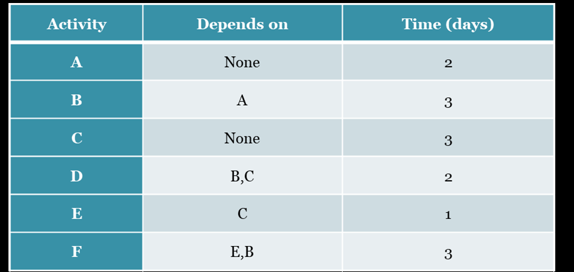
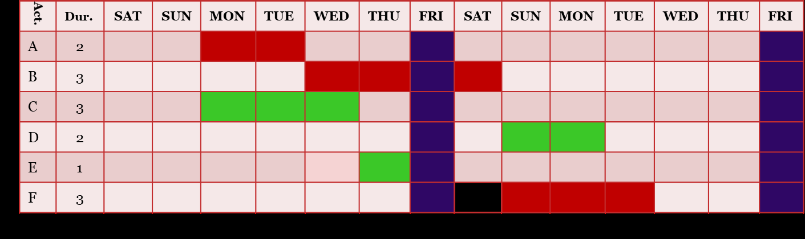

← Back to Index
Example 7 (Slide 51)
Example:
For the following project draw Gantt bar chart if the project starts on Monday 15/6/2015. Identify
the critical activities and find the total duration of the project in terms of number of
(i) working days; and (ii) Calendar days. Consider that workdays are six days a week (Saturday –
Thursday).

